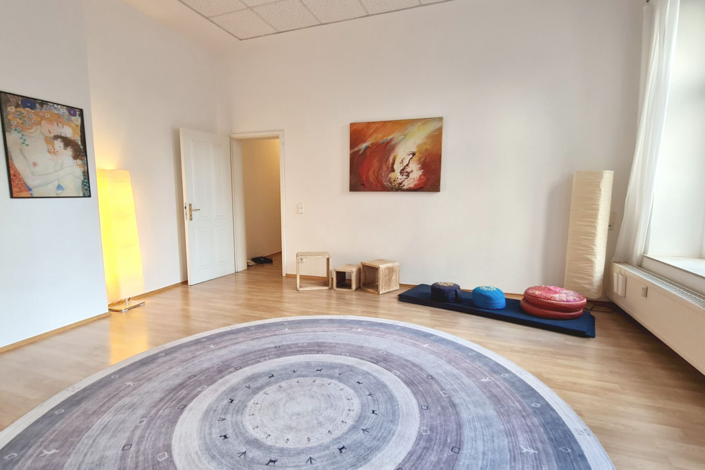

In der Gruppe kannst du dich selbst besser kennenlernen und im Kontakt mit anderen neue Erfahrungen machen.

Selbsterfahrungsgruppe
Die Gruppe sucht neue Leute.
Willst du dich selbst besser kennenlernen? Möchtest du mit anderen in Kontakt kommen und dich verbinden? In der Gruppe kannst du deine Gefühle und Bedürfnisse mit anderen erleben, aktuelle Lebensthemen teilen und neue Seiten an dir entdecken.
Du willst Gestalt lernen? Dann bist du hier richtig. Du bekommst nicht nur praktische Erfahrungen, sondern auch Einblicke in die theoretischen Grundlagen der Gestalttherapie.
Nach deiner Anmeldung lade ich dich zu einem Vorgespräch ein, um offene Fragen zu klären und mich kennenzulernen.
Wann
Donnerstags, alle zwei Wochen, 16:30 bis 18:30 Uhr Tag prüfen: alte Seite nennt auch dienstags
Gestalttherapeutisches Gruppenwochenende im Bildungshaus Sausedlitz. Nur noch wenige Plätze frei.
Habe ich den Wunsch nach Veränderung?
Was fühlt sich in meinem Leben erstarrt oder blockiert an?
Welche Fragen bewegen mich gerade?
Was möchte in mir heil werden?
Dieses Wochenende lädt dazu ein, innezuhalten, sich selbst bewusster wahrzunehmen und neue Erfahrungen zu ermöglichen. In einem geschützten Gruppenraum schaffen wir gemeinsam Zeit für Begegnung, Ausdruck und Entwicklung: mit gestalttherapeutischen Übungen, Austausch in der Gruppe, Einzel- und Kleingruppenarbeit, Zeit für Stille, künstlerischem Gestalten, Ritualen und gemeinsamem Singen.
Es begleiten dich Julia Adeline Kremer (NARM®-Therapeutin, Gestalttherapeutin, Kunsttherapeutin), Gilbert Josef Then (Gestalttherapeut, Heilpraktiker für Psychotherapie, Lehrtherapeut) und Ulrike Christl (Gestalttherapeutin in Ausbildung, Sprech- und Rhetoriktrainerin).
Stille zu erleben ist in unserem lauten Alltag nicht einfach.
Dabei kann die Stille eine Quelle für unsere ganz persönlichen Ressourcen und den eigenen Weg sein. Jeder Mensch hat seine eigene Spiritualität, manchmal ist sie verborgen. Gern begleite ich dich bei der Suche nach dem, was über das Alltägliche hinausreicht. Spirituelle Erfahrungen, ob in der Gruppe, einzeln oder zu zweit, brauchen den Austausch und die Integration in die eigene Persönlichkeit.
Geistliche Begleitung und Rituale
Als Priester biete ich geistliche Begleitung an. Wenn du sehr krank bist und dir ein Salbungsritual wünschst, oder wenn Schuld und Schuldgefühle dich stark belasten, suchen wir gemeinsam einen Weg zu Umdenken und Versöhnung, gern auch mit einem Ritual.
„Die größten Ereignisse, das sind nicht unsere lautesten, sondern unsere stillsten Stunden.“
Einführung in die Stille
nächster Termin
Begleitung
einzeln, zu zweit oder in der Gruppe
Das erste Gespräch ist kostenlos.
Rufen Sie an oder vereinbaren Sie online einen Termin. Es verpflichtet zu nichts.